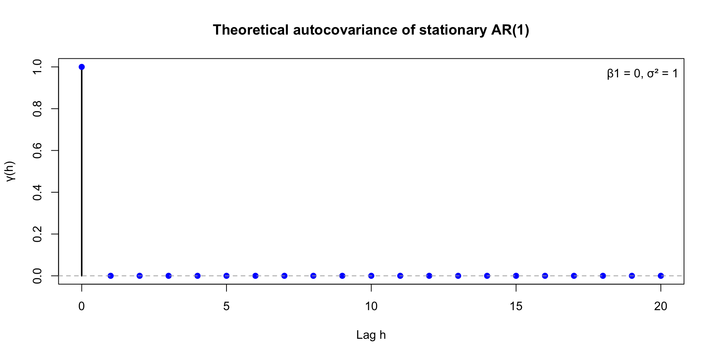
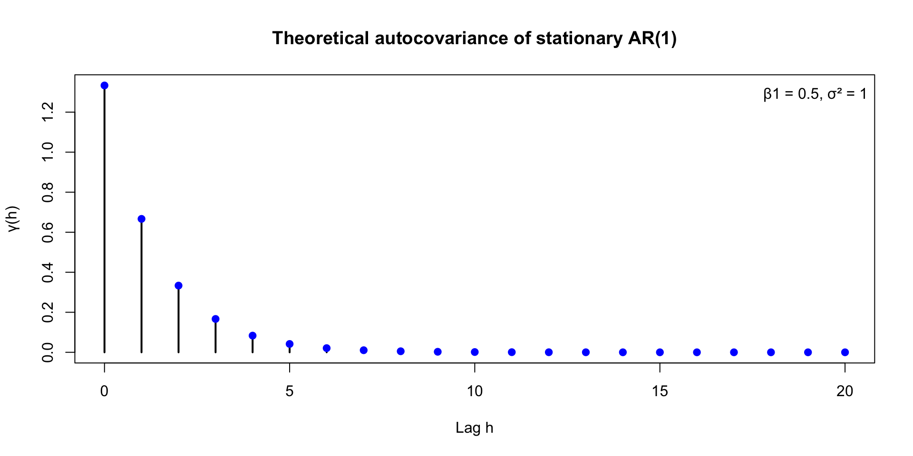
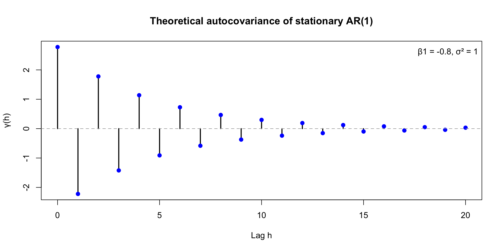
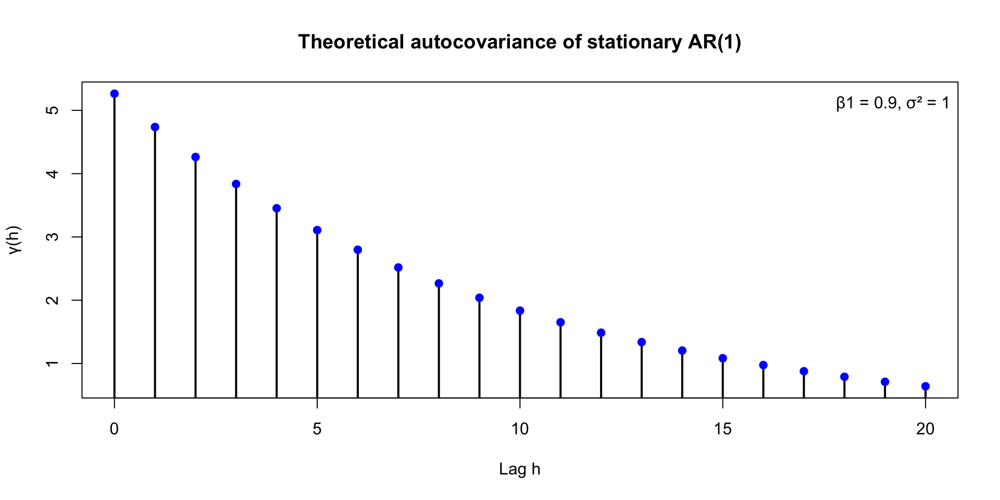
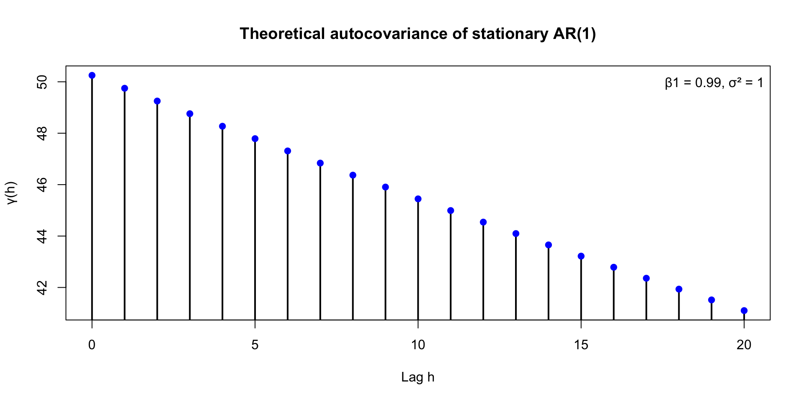
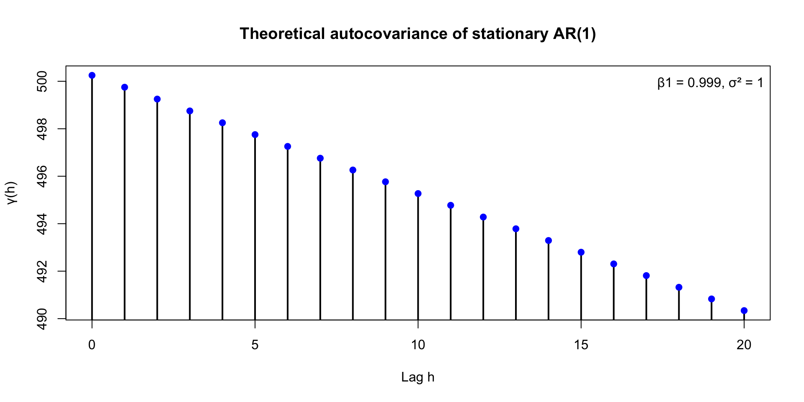

What is the joint distribution of an AR(1)?
Lecture 1
John Zito
Duke University
STA 542 Fall 2025
Time series
A time series is a set of measurements collected over time;
We model these data as a sequence of dependent random variables:
\[ \By_{0:T} = \{\By_0,\,\By_1,\,\By_2,\,...,\,\By_T\}. \]
- A time series model is “just” their joint probability distribution:
\[ p(\By_{1:T}) = p(\By_0)\prod_{t=1}^Tp(\By_t\,|\,\By_{0:t-1}). \]
Course themes
We will focus on a small set of themes, but go deep on them:
- Inference should be sequential. We want recursive estimation techniques to handle data that are streaming in real-time;
- Predictions should be probabilistic. We want point, interval, and density forecasts that incorporate many sources of uncertainty;
- If you can manipulate joint distributions, you can do time series analysis. This is obscured in too many TS texts;
And there is a secret fourth theme:
- A Bayesian approach is an excellent way of achieving the goals of sequential inference and probabilistic prediction.
The simplest non-trivial time series model
The autoregression of order 1, or AR(1):
\[ \begin{aligned} y_t &= \beta_0 + \beta_1 y_{t-1} + \varepsilon_t, \quad \varepsilon_t\iid\text{N}(0\com\sigma^2) \\ y_0 &\sim \text{N}(\mu_0\com \initvar), \end{aligned} \]
That’s the recursive form. It implies a joint distribution written marginal-conditional style:
\[ \begin{aligned} p(y_{0:T}) &= p(y_0) \prod_{t=1}^T p(y_t\given y_{0:t-1}) \\ &= p(y_0) \prod_{t=1}^T p(y_t\given y_{t-1}). \end{aligned} \]
Putting the “regression” in autoregression
In some sense the AR(1) is “just” a simple linear regression
\[ y_t = \beta_0 + \beta_1 x_t + \varepsilon_t, \quad \varepsilon_t\iid\text{N}(0\com\sigma^2), \]
where we took the predictor to be \(x_t=y_{t-1}\).
This perspective obscures the dependence structure, but will be useful for likelihood-based inference next week.
The game plan for the next few lectures
Do “All of Time Series Analysis” for this simple model:
- what is the joint distribution and what is its structure (marginals, conditionals, moments);
- stationarity;
- classical inference;
- Bayesian inference;
- (emphasizing recursive estimation in both cases);
- probabilistic forecasting from both inferential perspectives;
- evaluating probabilistic forecasts.
The rest of the course is in some sense theme and variations.
Last time: substitution fest
\(t=0\):
\[ y_0=y_0 \]
\(t=1\):
\[ y_1=\beta_0+\beta_1y_0+\varepsilon_1 \]
\(t=2\):
\[ \begin{aligned} y_2 &= \beta_0 + \beta_1 y_1 + \varepsilon_2 \\ &= \beta_0 + \beta_1 (\beta_0+\beta_1y_0+\varepsilon_1) + \varepsilon_2 \\ &= \beta_0+\beta_0\beta_1+\beta_1^2y_0+\beta_1\varepsilon_1+\varepsilon_2. \end{aligned} \]
\(t=3\):
\[ \begin{aligned} y_3 &= \beta_0 + \beta_1 y_2 + \varepsilon_3 \\ &= \beta_0 + \beta_1 (\beta_0+\beta_0\beta_1+\beta_1^2y_0+\beta_1\varepsilon_1+\varepsilon_2) + \varepsilon_3 \\ &= \beta_0+\beta_0\beta_1+\beta_0\beta_1^2+\beta_1^3y_0+\beta_1^2\varepsilon_1+\beta_1\varepsilon_2+\varepsilon_3. \end{aligned} \]
Get organized and notice the pattern
\[ \begin{aligned} y_0 &= & y_0 \\ y_1 &= \beta_0 &+\, \beta_1y_0 &+\, {\color{white}\beta_{\color{white}1}}\varepsilon_1 \\ y_2 &= \beta_0+\beta_0\beta_1 &+\, \beta_1^2y_0 &+\, \beta_1\varepsilon_1 + {\color{white}\beta_{\color{white}1}}\varepsilon_2 \\ y_3 &= \beta_0+\beta_0\beta_1+\beta_0\beta_1^2 &+\, \beta_1^3y_0 &+\, \beta_1^2\varepsilon_1 + \beta_1\varepsilon_2 + \varepsilon_3 \\ &\vdots \\ y_t &= \beta_0\sum\limits_{i=0}^{t-1}\beta_1^i &+\, \beta_1^ty_0 &+\, \sum\limits_{i=0}^{t-1}\beta_1^i\varepsilon_{t-i} \\ &\vdots \end{aligned} \]
The matrix equation
Writing the linear system as a matrix equation, you get:
\[ \begin{aligned} \underbrace{ \begin{bmatrix} y_0 \\ y_1 \\ y_2 \\ y_3 \\ \vdots \\ y_T \end{bmatrix} }_{\By} &= \underbrace{ \beta_0 \begin{bmatrix} 0 \\ 1 \\ 1+\beta_1 \\ 1+\beta_1+\beta_1^2 \\ \vdots \\ \sum\limits_{i=0}^{T-1}\beta_1^i \end{bmatrix} }_{\Bc} + \underbrace{ \begin{bmatrix} 1 & 0 & 0 & 0 & \cdots & 0 \\ \beta_1 & 1 & 0 & 0 & \cdots & 0 \\ \beta_1^2 & \beta_1 & 1 & 0 & \cdots & 0 \\ \beta_1^3 & \beta_1^2 & \beta_1 & 1 & \cdots & 0 \\ \vdots & \vdots & \vdots & \vdots & \ddots & \vdots \\ \beta_1^T & \beta_1^{T-1} & \beta_1^{T-2} & \beta_1^{T-3} & \cdots & 1 \\ \end{bmatrix} }_{\BA} \underbrace{ \begin{bmatrix} y_0 \\ \varepsilon_1 \\ \varepsilon_2 \\ \varepsilon_3 \\ \vdots \\ \varepsilon_T \end{bmatrix} }_{\Be} . \end{aligned} \]
By assumption,
\[ \Be \sim \text{N}_{T+1} \left( \Bm= \begin{bmatrix} \mu_0 \\ \Bzero \end{bmatrix} \com \BS = \begin{bmatrix} \initvar & \Bzero^\tr\\ \Bzero & \sigma^2\BI_T \end{bmatrix} \right) . \]
So by linearity,
\[ \By \sim \text{N}_{T+1} \left( \Bmu=\Bc+\BA\Bm \com \BSigma = \BA\BS\BA^\tr \right) . \]
What’s the mean?
Recall that
\[ E\left( \sum\limits_{i=1}^na_iX_i \right) = \sum\limits_{i=1}^na_iE(X_i). \]
So:
\[ \begin{aligned} E(y_t) &= E \left( \beta_0\sum\limits_{i=0}^{t-1}\beta_1^i + \beta_1^ty_0 + \sum\limits_{i=0}^{t-1}\beta_1^i\varepsilon_{t-i} \right) \\ &= \beta_0\sum\limits_{i=0}^{t-1}\beta_1^i + \beta_1^t E \left( y_0 \right) + \sum\limits_{i=0}^{t-1}\beta_1^i E \left( \varepsilon_{t-i} \right) \\ &= \beta_0\sum\limits_{i=0}^{t-1}\beta_1^i + \beta_1^t \mu_0. \end{aligned} \]
We only used \(E(\varepsilon_t)=0\). Didn’t need independence or normality.
What’s the variance?
Recall that for independent random variables,
\[ \var\left( \sum\limits_{i=1}^na_iX_i \right) = \sum\limits_{i=1}^na_i^2\var(X_i). \]
So:
\[ \begin{aligned} \var(y_t) &= \var \left( \beta_0\sum\limits_{i=0}^{t-1}\beta_1^i + \beta_1^ty_0 + \sum\limits_{i=0}^{t-1}\beta_1^i\varepsilon_{t-i} \right) \\ &= \beta_1^{2t} \var \left( y_0 \right) + \sum\limits_{i=0}^{t-1}\beta_1^{2i} \var \left( \varepsilon_{t-i} \right) \\ &= \beta_1^{2t}\initvar + \sigma^2 \sum\limits_{i=0}^{t-1}\beta_1^{2i}. \end{aligned} \]
We used time-invariance and independence of \(\varepsilon_t\) but not normality.
What’s the covariance?
Here you go:
\[ \cov(y_t\com y_s) = \begin{cases} \beta_1^{s-t}\var(y_t) & t\leq s\\ \beta_1^{t-s}\var(y_s) & s < t. \end{cases} \]
Derivation deferred to Problem Set 1.
Summary
Recursive form:
\[ \begin{aligned} y_t &= \beta_0 + \beta_1 y_{t-1} + \varepsilon_t, \quad \varepsilon_t\iid\text{N}(0\com\sigma^2) \\ y_0 &\sim \text{N}(\mu_0\com \initvar). \end{aligned} \]
Joint distribution:
\[ \begin{bmatrix} y_0 & y_1 & \cdots & y_T \end{bmatrix}^\tr \sim\text{N}_{T+1}\left(\Bmu\com \BSigma\right). \]
Moments:
\[ \begin{aligned} E(y_t) &= \beta_0\sum\limits_{i=0}^{t-1}\beta_1^i + \beta_1^t\mu_0 \\ \var(y_t) &= \sigma^2 \sum\limits_{i=0}^{t-1}\beta_1^{2i}+ \beta_1^{2t}\initvar \\ \cov(y_t\com y_s) &= \begin{cases} \beta_1^{s-t}\var(y_t) & t\leq s\\ \beta_1^{t-s}\var(y_s) & s < t. \end{cases} . \end{aligned} \]
How does this behave?
Some special cases
- iid: set \(\beta_1=0\) (and \(\mu_0=\beta_0\); \(\initvar=\sigma^2\)), and
\[ y_t\iid\text{N}(\beta_0\com\sigma^2). \]
- random walk with drift: set \(\beta_1=1\), and
\[ \begin{aligned} E(y_t) &= \beta_0t+\mu_0 \\ \var(y_t) &= \sigma^2t+\initvar. \end{aligned} \]
- funky: set \(\beta_1=-1\), and
\[ \begin{aligned} E(y_t) &= \beta_0\frac{1 - (-1)^t}{2}+(-1)^t\mu_0 \\ \var(y_t) &= \sigma^2t+\initvar. \end{aligned} \]
Graphical interlude
Assume \(\beta_1\neq 1\)
Finite geometric sum formula gives:
\[ \begin{aligned} E(y_t) &= \beta_0\frac{1-\beta_1^t}{1-\beta_1} + \beta_1^t\mu_0 \\ \var(y_t) &= \sigma^2 \frac{1-\beta_1^{2t}}{1-\beta_1^2}+ \beta_1^{2t}\initvar. \end{aligned} \]
What happens as \(t\to\infty\)?
Stationarity
A joint distribution is (strictly) stationary if it is “shift invariant”:
\[ \{y_{t_1}\com y_{t_2}\com ...\com y_{t_n}\}\overset{d}{=}\{y_{t_1+h}\com y_{t_2+h}\com ...\com y_{t_n+h}\}. \]
The Gaussian AR(1) with \(|\beta_1|<1\) has this property.
Stationary AR(1)
If \(-1<\beta_1<1\), \(\mu_0=\beta_0/(1-\beta_1)\), and \(\initvar=\sigma^2/(1-\beta_1^2)\), then the AR(1) is strictly stationary with the following:
\[ \begin{aligned} E(y_t) &= \frac{\beta_0}{1-\beta_1} \\ \var(y_t) &= \frac{\sigma^2}{1-\beta_1^2} \\ \cov(y_t\com y_s) &= \beta_1^{|t-s|}\var(y_t) = \beta_1^{|t-s|}\frac{\sigma^2}{1-\beta_1^2}. \end{aligned} \]
The common marginal shared by all \(y_t\) is called the stationary distribution:
\[ y_t\sim\text{N}\left(\frac{\beta_0}{1-\beta_1}\com \frac{\sigma^2}{1-\beta_1^2}\right). \]
So “did: dependent but identically distributed.”
Chat about stationarity
Hopefully your first thought upon encountering this concept is “real data won’t be stationary.” True!
-
So why care about this?
- Cute from a pure math point of view;
- If you simulate distributions with Markov chain Monte Carlo (MCMC), you bow down at the altar of stationarity;
- Stationarity means “dependent but not too dependent.” You can redo classical statistical theory replacing “iid” with “stationary,” and not much necessarily changes (convergence rates get worse);
- (A Bayesian won’t necessarily care about that last point.)
Autocovariance of a stationary process
For a stationary process, the covariance kernel satisfies
\[ \cov(y_t\com y_{s})=\cov(y_{t+h}\com y_{s+h})\quad \forall (t\com s\com h). \]
So you can define something called the autocovariance function:
\[ \gamma(h)=\cov(y_{t+h}\com y_{t}) \]
For the AR(1), this is
\[ \begin{aligned} \gamma(0)&=\sigma^2/(1-\beta_1^2) \\ \gamma(h)&=\beta_1^h\gamma(0). \end{aligned} \]
What does the autocov function look like?
What does the autocov function look like?

What does the autocov function look like?

What does the autocov function look like?

What does the autocov function look like?

What does the autocov function look like?

Let’s start thinking about inference
Plug-in estimators for the moments
If your AR(1) is stationary, then given data, expected values like
\[ \begin{aligned} \mu &= E(y_t)\\ \gamma(h) &= E[(y_{t+h}-\mu)(y_t-\mu)], \end{aligned} \]
can be estimated with simple sample averages
\[ \begin{aligned} \hat{\mu}_T &= \frac{1}{T}\sum\limits_{t=1}^Ty_t \\ \hat{\gamma}_T(h) &= \frac{1}{T}\sum\limits_{t=1}^{T-h}(y_{t+h}-\hat{\mu}_T)(y_t-\hat{\mu}_T). \end{aligned} \]
The last is the sample autocovariance function.
Recall some facts about the stationary AR(1)
Here’s what we’ve got:
\[ \begin{aligned} \gamma(1)&=\beta_1\gamma(0) &&\implies\beta_1=\frac{\gamma(1)}{\gamma(0)}\\ \mu&=\frac{\beta_0}{1-\beta_1}&&\implies\beta_0=(1-\beta_1)\mu\\ \gamma(0)&=\frac{\sigma^2}{1-\beta_1^2}&&\implies \sigma^2=(1-\beta_1^2)\gamma(0). \end{aligned} \]
So…any ideas how to estimate these?
The (baby) Yule-Walker equation(s)
Method of moments estimators for the AR(1) parameters:
\[ \begin{aligned} \hat{\beta}_1&=\frac{\hat{\gamma}_T(1)}{\hat{\gamma}_T(0)} \\ \hat{\beta}_0&=(1-\hat{\beta}_1)\hat{\mu}_T\\ \hat{\sigma^2}_T&=(1-\hat{\beta}_1^2)\hat{\gamma}_T(0). \end{aligned} \]
Asymptotics
A word about assumptions
-
Normality was not essential, but stationarity absolutely was:
- there is no such thing as \(\gamma(h)\) without it;
- the estimating equations for method-of-moments make no sense if the process isn’t stationary;
But interesting “real-world” data probably are not stationary, and so it would be nice to have estimation techniques that don’t completely break down without it.